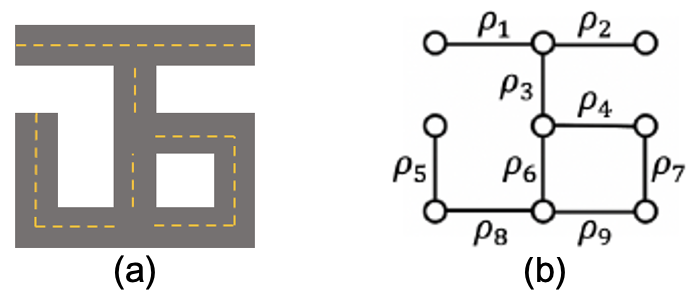
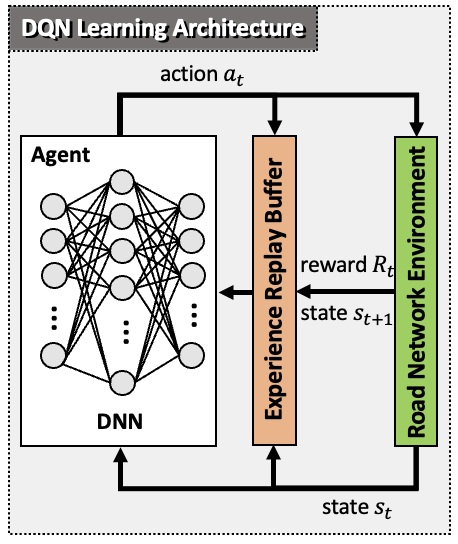
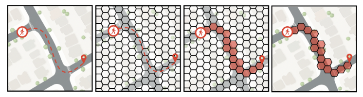
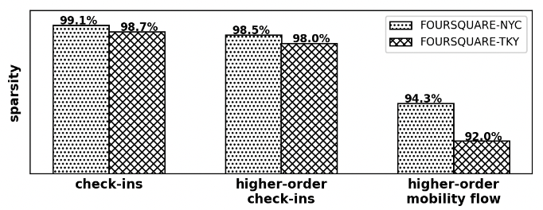
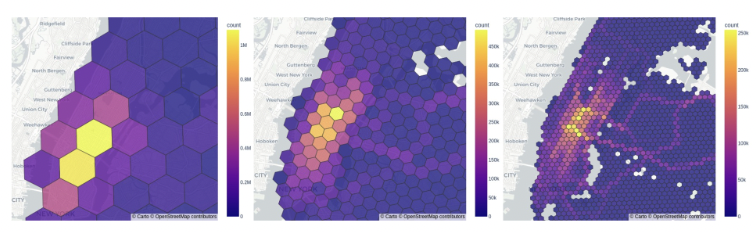
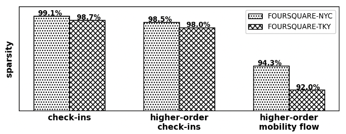
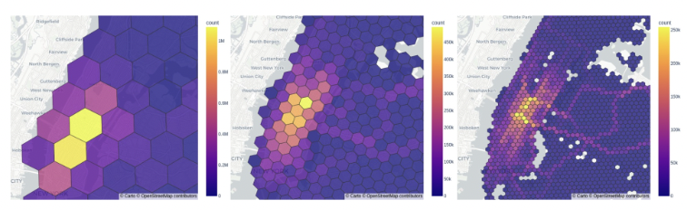

My Portfolio
PathletRL: Trajectory Pathlet Dictionary Construction using Reinforcement Learning
Date Completed: November 13, 2023

(a) A simple road map; (b) Initial nine pathlets of the road map in (a), which are initially the road segments

Sophisticated location and tracking technologies have led to the generation of vast amounts of trajectory data. Of interest is constructing a small set of basic building blocks that can represent a wide range of trajectories, known as a trajectory pathlet dictionary. This dictionary can be useful in various tasks and applications, such as trajectory compression, travel time estimation, route planning, and navigation services. Existing methods (e.g., Chen et al., Agarwal et al., etc.) for constructing a pathlet dictionary use a top-down approach, which generates a large set of candidate pathlets and selects the most popular ones to form the dictionary. However, this approach is memory-intensive and leads to redundant storage due to the assumption that pathlets can overlap. To address these limitations, we propose a bottom-up approach for constructing a pathlet dictionary that significantly reduces memory storage needs of baseline methods by multiple orders of magnitude (by up to 24K times better). The key idea is to initialize unit-length pathlets and iteratively merge them, while maximizing utility. The utility is defined using newly introduced metrics of trajectory loss and trajectory representability. A deep reinforcement learning method is proposed, PathletRL, that uses Deep Q Networks (DQN) to approximate the utility function. The method was implemented with the help of Tensorflow's tf-agents. Experiments show that our method outperforms the current state-of-the-art, both on synthetic and real-world data. Our method can reduce the size of the constructed dictionary by up to 65.8% compared to other methods. It is also shown that only half of the pathlets in the dictionary is needed to reconstruct 85% of the original trajectory data. The RL models also show that their performance can reach convergence as early as 15 iterations.
Click below for the Github repository. Moreover, our paper recently got nominated as Best Paper in the full, research track in the ACM SIGSPATIAL 2023 conference. Woo-hoo! (The official DOI link has been added but the proceedings is not yet available until further notice; see Github for the paper) Click below to read more!
Click below for the Github repository. Moreover, our paper recently got nominated as Best Paper in the full, research track in the ACM SIGSPATIAL 2023 conference. Woo-hoo! (The official DOI link has been added but the proceedings is not yet available until further notice; see Github for the paper) Click below to read more!
Point2Hex: Higher-order Mobility Flow Data and Resources
Date Completed: November 13, 2023





Research on trajectory data mining relies on appropriate datasets, including GPS-based geolocations, check-in data to points of interest (POIs), and synthetic datasets. Even though some data are accessible, the majority of mobility datasets are typically discovered through ad-hoc searches and lack comprehensive documentation of their generation process or source to reproduce curated or customized versions of them.
At the same time, there has been a growing interest in a new type of mobility data, describing trajectories as sequences of higher-order geometric elements like hexagons that offer several benefits: (i) reduced sparsity and analysis at different granularity levels, (ii) compatibility with popular machine learning architectures, (iii) improved generalization and reduced overfitting, and (iv) efficient visualization.
To this end, we present Point2Hex, a method and tool for generating higher-order mobility flow datasets from raw trajectory data. We used Point2Hex to create higher-order versions of seven popular mobility datasets typically employed in trajectory-related technical problems and downstream tasks, such as trajectory prediction, classification, clustering, imputation, and anomaly detection, to name a few.
To promote reuse and encourage reproducibility, we provide the source code and documentation of Point2Hex, as well as the generated higher-order mobility flow datasets in publicly accessible repositories.
Click below for the Github repository. Our paper has also been recently accepted in the dataset and resource paper track of the upcoming ACM SIGSPATIAL 2023. Click below to read more!
At the same time, there has been a growing interest in a new type of mobility data, describing trajectories as sequences of higher-order geometric elements like hexagons that offer several benefits: (i) reduced sparsity and analysis at different granularity levels, (ii) compatibility with popular machine learning architectures, (iii) improved generalization and reduced overfitting, and (iv) efficient visualization.
To this end, we present Point2Hex, a method and tool for generating higher-order mobility flow datasets from raw trajectory data. We used Point2Hex to create higher-order versions of seven popular mobility datasets typically employed in trajectory-related technical problems and downstream tasks, such as trajectory prediction, classification, clustering, imputation, and anomaly detection, to name a few.
To promote reuse and encourage reproducibility, we provide the source code and documentation of Point2Hex, as well as the generated higher-order mobility flow datasets in publicly accessible repositories.
Click below for the Github repository. Our paper has also been recently accepted in the dataset and resource paper track of the upcoming ACM SIGSPATIAL 2023. Click below to read more!
Epidemic Spreading with Trajectory Data Mining
Date Completed: November 1, 2022

Conventional epidemic models include the tradtional SIR compartmental model, but however these traditional methods lack the granularity needed for analyzing individual mobility and behaviors during an epidemic that would aid in understanding the relationship between individual decisions and epidemic spreading. In contrast to macroscopic models, microscopic epidemic models focus on individuals and their properties, such as their activity level, mobility behaviors, and impact of mobility behavior changes. Our microscopic spatiotemporal epidemic model allows to: (i) assess the risk of infection of an individual based on mobility patterns; (ii) assess the risk of infection associated with specific geographic areas and points-of-interest (POIs); (iii) assess
the risk of infection of a trip in an urban environment; (iv) provide trip recommendation for mitigating the risk of infection; and (v) assess targeted intervention strategies that aim to control the epidemic spreading. Our work provides an evidence-based data-driven model to inform individuals about the infection risks associated with their mobility behavior during a pandemic, providing at the same time safer alternatives. It can also inform public policy about the effectiveness of targeted intervention strategies that aim to contain or mitigate the epidemic spread compared to horizontal measures.
In addition, we have designed and developed STRIPE (Safe Trips during Epidemics), a mobility-based recommendation system that can provide safer trip recommendations to individuals. The recommendation model considers the risk of infection of alternative trips between an origin and destination. It also considers the risk of infection of specific points of interests (POIs) that occur at the microscale. In this paper, we present a high-level architecture of the system, its main features and system use cases. The broader impact of our research is that by helping individuals making informed decisions, we promote more responsible behaviors in the community as a whole that could effectively alleviate the impact of the epidemic.
Click below for the Github repository. Moreover, two of our papers got accepted and published in top-tier conferences! One is a demo paper in the IEEE MDM 2022 conference and the other is a workshop paper in the ACM SIGSPATIAL 2022 conference. Click below to read more!
In addition, we have designed and developed STRIPE (Safe Trips during Epidemics), a mobility-based recommendation system that can provide safer trip recommendations to individuals. The recommendation model considers the risk of infection of alternative trips between an origin and destination. It also considers the risk of infection of specific points of interests (POIs) that occur at the microscale. In this paper, we present a high-level architecture of the system, its main features and system use cases. The broader impact of our research is that by helping individuals making informed decisions, we promote more responsible behaviors in the community as a whole that could effectively alleviate the impact of the epidemic.
Click below for the Github repository. Moreover, two of our papers got accepted and published in top-tier conferences! One is a demo paper in the IEEE MDM 2022 conference and the other is a workshop paper in the ACM SIGSPATIAL 2022 conference. Click below to read more!